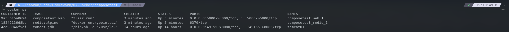

DOCKER COMPOSE
Table of Contents
什么是 Docker Compose
Compose 是用于定义和运行多容器 Docker 应用程序的工具。通过 Compose，您可以使用 YML 文件来配置应用程序需要的所有服务。然后，使用一个命令，就可以从 YML 文件配置中创建并启动所有服务。
安装 Docker Compose
对于 Linux 来说就两条命令：
- sudo curl -L "https://github.com/docker/compose/releases/download/1.29.2/docker-compose-\((uname -s)-\)(uname -m)" -o /usr/local/bin/docker-compose
- 下载 docker-compose 到 /usr/local/bin/docker-compose
- sudo chmod +x /usr/local/bin/docker-compose
- 赋予运行权限
- docker-compose –version
- 查看是否安装成功
Getting started
官网有一个关于 python web 的应用程序。这个应用程序使用 Flask 框架并在 Redis 中维护一个命中计数器，这里不要求配置 python 与 Redis 环境，你也不需要懂得 python 与 redis。
Step 1: Set up
创建一个项目目录
$ mkdir composetest $ cd composetest
创建一个名为
app.py的文件，文件内容如下：
import time import redis from flask import Flask app = Flask(__name__) cache = redis.Redis(host='redis', port=6379) def get_hit_count(): retries = 5 while True: try: return cache.incr('hits') except redis.exceptions.ConnectionError as exc: if retries == 0: raise exc retries -= 1 time.sleep(0.5) @app.route('/') def hello(): count = get_hit_count() return 'Hello World! I have been seen {} times.\n'.format(count)
创建一个名为
requirements.txt文件，文件内容如下：
flask redis
Step 2: Create a Dockerfile
在这一步，我们创建一个 Dockerfile 文件，利用这个 Dockerfile 文件来创建镜像：
# syntax=docker/dockerfile:1 FROM python:3.7-alpine # 以 python3.7 开始创建这个镜像 WORKDIR /code # 规定 /code 是工作目录 ENV FLASK_APP=app.py # 使用 flask 命令来建立环境 ENV FLASK_RUN_HOST=0.0.0.0 RUN apk add --no-cache gcc musl-dev linux-headers # 下载 gcc 以及其他依赖 COPY requirements.txt requirements.txt # 复制宿主机中的 requirements.txt 文件到 docker 容器中 RUN pip install -r requirements.txt # 通过下载 requirements.txt 中的 python 依赖 EXPOSE 5000 # 暴露端口 COPY . . # 复制宿主机当前目录下的项目到容器中 CMD ["flask", "run"] # 在容器中运行 "flask run" 这条命令
Step 3: Define services in a Compose file
创建一个 docker-compose.yml 文件，文件内容如下：
version: "3.9" services: web: build: . ports: - "5000:5000" redis: image: "redis:alpine"
在这个 compose 文件中，我们定义了两个服务：
- Web service
web 服务使用的是我们自己通过 Dockerfile 构建的镜像，暴露的端口也是 Flask 的默认端口：5000。 - Redis service
redis 服务使用的是从仓库中拉取的官方镜像。
Step 4: Build and run your app with Compose
运行命令：
docker-compose up
docker-compose up
查看
http://localhost:5000

刷新页面，数字会增加1。

docker images：查看镜像数量

Step 5: Edit the Compose file to add a bind mount
重新编写 Compose 文件，添加数据卷，允许在宿主机中工作。
version: "3.9" services: web: build: . ports: - "5000:5000" volumes: - .:/code environment: FLASK_ENV: development redis: image: "redis:alpine"
Step 6: Re-build and run the app with Compose
docker-compose up ，重新运行。
Step 7: Update the application
由于现在使用卷将应用程序代码挂载到容器中，因此您可以对其代码进行更改并立即看到更改，而无需重新构建映像。
import time import redis from flask import Flask app = Flask(__name__) cache = redis.Redis(host='redis', port=6379) def get_hit_count(): retries = 5 while True: try: return cache.incr('hits') except redis.exceptions.ConnectionError as exc: if retries == 0: raise exc retries -= 1 time.sleep(0.5) @app.route('/') def hello(): count = get_hit_count() # return 'Hello World! I have been seen {} times.\n'.format(count) return 'Hello from Docker! I have been seen {} times.\n'.format(count)
Step 8: Experiment with some other commands
- docker-compose up -d
- 在后台运行
- docker-compose ps
- 查看运行中的 docker compose
- docker-compose stop
- 停止 docker compose
- docker-compose down –volumes
- 使用 down 命令删除所有内容，完全删除容器。——volumes 可以删除容器使用的数据卷
yaml 规则
有关 docker compose 的 yaml 规则：
- docker compose 的 yaml 有且只有 3 层
- version：版本
- services：服务
- 其他：
- volumes
- networks
- configs
- volumes
- version：版本
更多的配置参考看这里：https://docs.docker.com/compose/compose-file/compose-file-v3/#service-configuration-reference